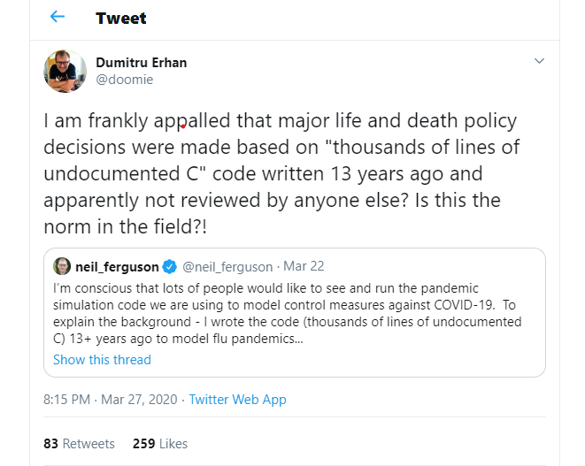

Theory Blog Posts
Week one Blog
The web 2.0
Imagine a world with no social media, no youtube, no apps or online games. For the newer generations this seems like an impossible world to live in, the idea of not being connected is a scary thought, but for the older generations this was once a reality… even the thought of sending a message or image to someone halfway across the world in seconds was a crazy idea. I know for sure that I would never be able to survive in such a reality. Before the upgraded version of the web (known as the web 2.0) the internet was very bland, only reems of text could be searched and what would return would be text as well not nice to look at if you’re a person who has no clue what’s cooking. Then this all changed with the invention of the web 2.0. the web 2.0 was focused on more user generated content and ease of use for the average everyday person, this means that you don’t need to be an expert to know how to use the web, simply click and go!! This opened up a whole world of opportunities and access to archives upon archives of information, you could now search images, videos, chat with friends on social media networking sites, the list goes on and on. However this was not an instant upgrade, the move from the web 1.0 to 2.0 took years to fully establish, slowly getting more users. Without making the internet widely accessible to the people of the world the advancement in technologies and the great advancement of knowledge that we’ve seen in the past few years would’ve never taken place. https://en.wikipedia.org/wiki/Web_2.0
Week two Blog
The Browser wars
How did the world wide web go from being unbelievably difficult to navigate to the most easily accessible source of information that the world has ever known?? This is all thanks to the browser. But how did the browser come about you ask? Well long ago a team of undergraduate students at the university of Illinois lead by Marc Andreessen had an idea, to make the world wide web easily accessible to everyone and so a software program called the browser was born, an interface that turned text only data into images, videos, hypertexts and many more ways of viewing data. This made surfing the internet a user-friendly experience for all to enjoy. So how did the browser start? While in university the team of students developed mosaic, the first user friendly browser, this was sadly owned by the university as they developed it at the university and they owned the intellectual rights to the information. So to avoid being taken to court the team had to start from the ground up in redeveloping the browser software, they made it better that the last and added new features. This was the rise of the first internet browser and netscape was born, a completely new browser with new features that made use of new techniques to secure the users data, these are the SSL Protocol and the TLS to add privacy and security. This was the beginning of the browser wars. Microsoft then bought Mosaic the program that the students had previously developed and developed a new browser, Internet Explorer. This browser competed with netscapes browser. This is the start of the war between them. Microsoft being the multi-billion dollar company that it is was basically a ‘super-power’ that Netscape could not compete with. Microsoft then won the war with internet explorer, netscape stayed alive for a partial time after that but eventually had to close down. But netscape had one final trick up their sleeve, before closing down Netscape publicaly released the source code for their browser hoping that this would give rise to new browser developers that could challenge microsofts internet explorer, and so it did and new browsers started to appear, Mozilla and Firefox being the most popular these are all build on netscapes original source code. https://www.popularmechanics.com/culture/web/a27033147/netscape-navigator-history/
Week three Blog
What are URLs and how do they work?
A URL… sounds complicated right? I’m writing this to shed some light on the matter. In plain terms the URL or Uniform Resource Locator is one of the most important cogs that makes a web browser tick. It allows a browser to fetch any resources on the web . it is nothing more than a unique address to where information that you are looking for can be found. Its basically like asking for a friends home address so that you know where he keeps all his stuff. So how do they work ? Well I wont bore you with many technical terms but think of your browser as a GPS, you type in the address that you want to go to and it uses a path to go to directly to that address, fetches what you need and then brings it back to you, so that the stuff stored at your friends house is now available for you to use. But URLs have a lot more complexity behind them. They have many different aspects of the address that they specifically look at and that are critical to their functioning, they have protocols which tells the browser how to transport the data forward and back from the server, ports which tells the browser which gate to use and get into the website, paths to files which detail exactly where the file that you are searching for can be found. I think that these are the most important aspects of the URL however the URL cannot can not function without the Domain names, Parameters, and Anchors. Together all of these modules form the URL and how it functions. The URL is arguably one of the most important aspects of the internet and without it, the internet would not function. https://developer.mozilla.org/en-US/docs/Learn/Common_questions/What_is_a_URL
Week four Blog
A reflection on a brief history of web robots
They go by many names, web robots, crawlers, spiders. What actually are they? Well they’re programs that search the internet for you to find many different types of information that can either be used for good intentions, to help us, or for bad intentions. Lets face it we’re all lazy, its what makes us human I would even go as far as saying its in our DNA. So why crawl the internet yourself which could take hours to find what you’re looking for when you can just get something else to do it for you, making your life so much easier. This is where web robots come in. they search the internet for you and return information that they’ve found regarding what you’ve searched. Almost all search engines use them, google for example has a bot called a Googlebot, these bots also referred to as spider web robots search the web for you in a matter of seconds and list all the sites relevant to your search. This isn’t just the extent to which they function though, they can do way more. Bots known as trading web bots can compare prices of products that you search collected from a whole array of websites allowing you to find the best product. Bots known as media web robots find and return anything from weather updates to the latest news relevant to the country you stay in and world news. Web robots are unbelievably powerful tools in todays day and age, these are the good legitimate ones. So… all good right? No… they have a much darker side to them. Being such a powerful tool, web bots can be used for way more sinister tasks. They can be used to perform destructive tasks. They can be used for anything from stealing your private information to slowing down your computer. Those annoying pop-ups that we all get, these are called spam bots, they collect information about you for example your email address so that companies can spam you with advertising. Hacker bots find weaknesses in websites and exploit them to gain access and maliciously use the information. Botnets are another one of these great threats to our internet security, ghost networks that are used by hackers to perform dangerous attacks on the internet and could take over your computer without you knowing. Downloading bots can spam you with messages saying you must download software to continue, bad choice if you clicked yes, malware can slow down your computer or even turn it into a brick. We all have a darker side to us and robots are no different, they can be used for sinister purposes with malicious intent to steal or hard or they can be used to help us and for good reasons and intent. With this great power comes great responsibility. https://opensourceforu.com/2017/07/web-robots-worker-bees-internet/
Week five Blog
What is html and how does it work?
So what is html? Well html is a hyper-text markup language, which for those of you who don’t know is a language created to enable the creation of websites that can be viewed by anyone on the internet, it is an unbelievably powerful tool in today’s modern age world allowing information to be shared to everybody in the world by just the click of a button. The hyperlink is basically the “car” of the internet allowing you to select a destination and you are taken to that destination within a matter of milliseconds. Html is a collection of code that can be read by an internet browser telling it what to display to the viewer and in what way to display it. There are many different tools that a web designer must use to make to information displayed easily readable and distinguishable to the viewer, these are critical in designing a good and interactive website. Many of these include headers, italics, bold and many more. The way the website looks aesthetically is also a critical part of the website and this is controlled through code called CSS code, or cascading style sheet code. The CSS code part will tell the browser how to display the text, in what format, what colors to paint the backgrounds and foregrounds and the text and many more things. In conclusion the creation of html is one of the most important aspects in use in the web today and holds unbelievable power due to the fact that it is the medium that easily communicates information out to the world. https://www.yourhtmlsource.com/starthere/whatishtml.html
Week six Blog
Wireframes and why they are so important
Wireframes are one of the most important aspects of a website because they allow a designer to plan out in detail how the information will be communicated to the viewers on the internet. The end user will never see the wireframe, it is just a tool for the designer to use to get there ducks in a row and it is especially important to create a wireframe if working in a team so that all the designers and developers know what the end product should look like. Wireframes are just the skeleton of what the website should look like, drawn with basic shapes and boxes. Wireframes allow designers to explore different design options and which design option would be the best to communicate the information that they have. Personally, my own wireframe has changed multiple times, the first one being way too overcrowded with information, I then organized it in a way that the first page is simple with menus allowing the viewer to select the information that they wish to view. The color of my website has also changed many times going from more vibrant bright colors to more sophisticated light greys and blues. To round everything up a wireframe is more of a tool to conceptualize what the designer wants out of a website and this is always fluid and subject to change to improve on the look and feel of the website. https://www.seguetech.com/the-importance-of-wireframing-for-a-responsive-website/
Week seven Blog
Online learning, how can we make the jump?
It is no secret that Covid-19 has now changed the world and flipped it upside down, the lives of the people on the earth have changed drastically in only a few short weeks but what does that mean for scholars and the world of education? Thankfully the internet has provided many platforms for the people of the world to stay sane and communicate knowledge through many different programs, zoom, MS teams etc. but how does one stay focused? Coming from a student with mild ADHD and the attention span of a goldfish I’ve found this quite a challenge, so I turned to the one place that could give me the best advice, the internet. Here are a few tricks that have helped me, firstly find a nice quite place where you won’t be disturbed as often and a nice big bottle of concerta. Secondly try to minimize distractions, and that doesn’t mean minimize YouTube, it means close YouTube and resist the urge to open it back up. And lastly the thing that probably helped me the most… rewards. If you reward yourself after working you get a feeling of actually accomplishing something, for me the extra spicy Doritos work like a charm. https://www.ccu.edu/blogs/cags/2014/02/how-to-stay-focused-while-studying-for-online-classes/
Week eight blog
South Africa's digital Capital
Ever ask the question, which city in south africa is the most technologically advanced? which is the closest to being the smart city of the future? The answer shouldn't surprise you, Cape Town being one of the most important cities for our economy is the most technologically advanced city in South Africa. This is no doubt due to its many factors that make it popular like tourism and the wealth that it brings in. These cities are the new age cities of the future, where information is collected from the cities people in order to optimise its resources and connect people, improving trading and business. This status of an advanced city draws attention globally for being so cutting edge and improving the lives of people, attracting business. But what makes a city a digital capital? well it can be anything that the city posseses that generates information to improve and optimise living, this can be anything from smart roads and streetlights to smart watering systems that water only when needed. The possabilities are endless with technology at humanities fingertips making one wonder how cities and people will live in the future. https://www.howwemadeitinafrica.com/smart-cities-africa-nairobi-cape-town/58209/#:~:text=A%20smart%20city%20targets%20energy,on%20the%20smart%20city%20front
Week nine blog
The Digital divide and how it affect us
A digital divide the uneven distribution of Technologies and the accsess to Technologies and communications. These divides happen all over the world because of the extreemly high cost to impliment these infrastructures and technologies. This creates a divide between people who have constant access to technologies and the infrastructure to use them, whether it be cell towers to transmit data or something as small as a cellphone. Many more factors affect this digital divide in societies. digital literacy being one of them, having the knowledge to use and navigate the internet is a skill the world takes for granted, being able to access information 24/7 at the click of a button is an unbelievably powerful tool. Older generations that did not grow up with technology and that struggle to use it can not operate technologies as well as they younger generations, this leads to the older generations not using technology to its full potential, this creates a age related digital divide.many more factors like income and location also widen this digital divide, but how does this affect us? well the more people connected to the internet the more information that is transmitted throughout the world, diversifying our knowledge of forign culture and practices that could aid in society and make life better. The age gap between generations also adds to how this digital divide affects us, this means that the older generations must rely of the younger generations to help operate the technology. As this digital divide closes the world will see a meshing of cultures and a vast archive of information from all over the globe improving lives all around. https://en.wikipedia.org/wiki/Digital_divide
week ten blog
Ethnical Implimentation of UX and UI
UX and Ui designs are one of the most powerful tools that a developer has at their disposal, and like any powerful tool it can both be used in a good way or a bad way. In the age of information a developer becomes something similar to a scribe and an archetect, recording information for billions of people to see and access through their design of a website or app. They way these websites are seen and layed out are all thanks to UX and UI. The way that information is being presented to the end user can differ in many ways with good UI and UX design making a websites information readily available at the click of a button and easily navigatable this makes it ethnical. By designing a website in such a way by using tools like bold text to highlight important information and a menu system catagorise the contained information making the experience easy and fun for the user. This is however, not always the case. UX and UI can also be made in a bad way making it unethical, this can be done in many ways, from making a big button that people click by mistake when scrolling and are taken to another site to advertising information that the website does not posses just to get the user to click on the site. The bad design of UX and UI make the website harder to navigate making the end user search around for longer trying to find the information they need making it more frustrating to visit your site. https://uxdesign.cc/the-importance-of-ethics-in-ux-design-378468935703
week eleven blog
A close reading of Graham et al’s “Toward a study of information geographies” (Required Blog post week 11)
The aim of the paper is to show how information geographies have their own geographical distrubution, geography of access, geography of participation and geography of representation all adapted to local context and geography. The methods used to show this are broad surveys of different platforms that host, administrate and produce various types of geographical infromation by using combination of existing statistics and specific data not used or mapped before. The paper’s results show a geography of uneven acces to the current ways of communication, uneven geography of participation and representation and that these are obvious and even amplified rather than reduced. The paper goes on to say that before the information or digital revolution, information was distributed by books or news articles with physical storage and the tools for analysing, checking, collecting and issuing geographical stories and geographical information were in the hands of few qualified people. With the advent of the internet everyone can publish, news travels widely, fast and on a large scale. Information is power and those that have access to the production and issuing of information use it to exert economic, social and political power. This is true of both pre and post digital era but the eneven relatioship between the production of information and its distribution has highlighted spatial inequalities eg Africa has technological deficit compared to asia, europe or America. Access to internet and broadband affordability being a major barrier to participation in poorer countries with lower incomes as well as the eneven geographies. Besides access, there is a lack of computer coding skills required to participate and work collaboratively on shared platfoms such as GitHub or Wikipedia on the african continent as opposed to Europe or America. Barriers to produing and processing information are greatly lowered allowing people access to information and knowledge regardless of their geography but the question now is how has this altered the political economy of information? The paper covers a broad survey of who has access to technology (using World Bank statistics of internet access to show global trends), where is the digital information generated and in which parts of the world is the content created and who is represented (using the International Telecommunications Union as a source). In general this highlights inequalities and disparaties geographically, the global North having the highest level of participation and generating information and the South, Africa in particular, the lowest. Even the way places are represented or omitted within information geographies shows wide differences in spatial representation. Google indexes show selective representation of countries and highlightls the broader uneven inequality picture of the Web. OSM, Freebase and Geonames further imbalances in the wider picture of information ecosystems. Some parts of the world are massively over-represented and others grossly under-represented. As the paper concluded, this is a very broad picture of geographical production, representation of information & access and participation in it and is really only telling us what we already logically know about the disparaies looked at. The paper rightly suggests that looking into cultural, information governance, political control of geographic information, affordability , access to infrustuture of connectivity, censorship etc are factors deserving more focus to understand and improve on the current geographies of information. This, I think, will be of more value. Graham, M., De Sabbata, S. and Zook, M. A. (2015) ‘Towards a study of information geographies: (im)mutable augmentations and a mapping of the geographies of information’, Geo: Geography and Environment, 2(1), pp. 88–105. doi: 10.1002/geo2.8.
Week twelve Blog post
Critical Reflection on Tweet(Required Blog post week 15)
The predominant issue being discussed in this tweet is the inhumane nature that the current global pandemic has brought. Neil Ferguson is a British epidemiologist who had a dominant influence in the lockdown policies in the U.K. He modelled and coded simulations in an attempt to learn more about the Covid-19 Virus. He was perceived as a hero to the general public, as he was a head figure and symbol of hope during this pandemic, but this did not last. It was later revealed that the code he has been using in these simulations was chaotic and poorly done, yet it was still used without a question. In recent news, it was released that Ferguson violated his own lockdown regulations in order to peruse lustful intentions with a marries woman. This reflects a huge ethical issue that is the degradation of the value of human life. How can the lives and livelihood of millions of people be equated and reduced to a code that was written over 13 years ago for the flu? Rigid policies were made based around this simulation that are now most likely inaccurate, and more decisions are still being made. Covid-19 is a virus that we know nearly nothing about, and we are basing our adapted way of living on a flawed representation. One wrong fact could lead to devastating consequences. As said in the tweet, no one bothered checking the codes being used. The mere fact that it was discovered that Ferguson, the “Joan of Arc” himself, was suffering from the virus proves that these inhumane stipulations being directed are unethical, and they simulations are not bringing results. The life of human beings is at stake, following lockdown regulations dictated from a man who doesn’t care.